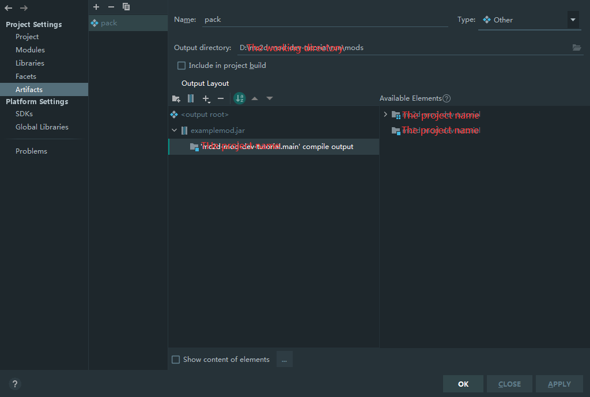

调试你的模组#
每次写好后都要打包很麻烦？我们将通过启动配置的方式来启动游戏。
本篇假设读者使用IntelliJ IDEA。
- 点击
Add configuration...。 - 点击
+，选择Application。 - 起个名字。模块选择带
main的。 - 设置主类为
io.github.overrun.mc2d.Main。并设置运行目录。 - 在运行目录下手动创建
mods文件夹。 - 新建一个Artifact并设置成类似于图中的样子。然后点击OK。
- 在启动配置的Before launch中添加你的Artifact。
现在点击启动！
额外的启动配置#
默认情况下，控制台并不会高亮显示。要解决此问题，您只需要添加一条VM Option即可。
-Dmc2d.log.disableAnsi=false